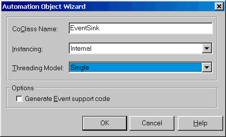
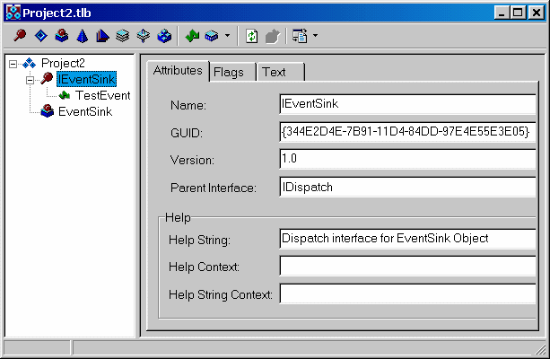
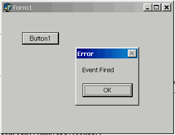
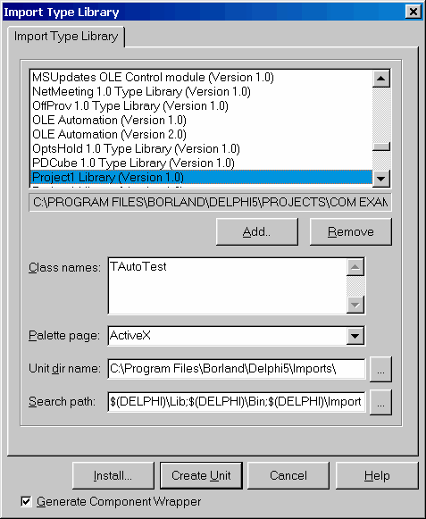
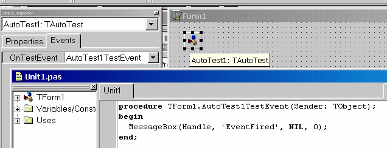

OLE Automation
Стандарт COM основан на едином для всех поддерживающих его языков формате таблицы, описывающей ссылки на методы объекта, реализующего интерфейс. Однако, вызов методов при помощи этой таблицы доступен только для компилирующих языков программирования. В то же время, очень удобно было бы иметь доступ к богатству возможностей, предоставляемых COM из интерпретирующих языков, таких, как VBScript. Для поддержки этих языков была разработана технология под названием OLE Automation, позволяющая приложениям делать свою функциональность доступной для гораздо большего числа клиентов. Automation базируется на COM и является его подмножеством, однако накладывает на COM-серверы ряд дополнительных требований:
| 1. | Интерфейс, реализуемый COM-сервером должен наследоваться от IDispatch |
| 2. | Должны использоваться типы данных, из числа поддерживаемых OLE Automation |
Boolean WordBool
Unsigned Char Byte
Double Double
Float Single
Int SYSINT Машинно-зависимый целый тип данных, в настоящее время объявлен как Integer, однако, в будущем может иметь другую разрядность
Long Integer
Short SmallInt
BSTR WideString В Automation нельзя использовать строки Delphi
Currency Currency
Date TDateTime
SAFEARRAY PSafeArray Массив из элементов любого поддерживаемого типа
Decimal TDecimal 96 битное десятичное число.
Interface IDispatch * IDispatch Ссылка на IDispatch или любой унаследованный от него интерфейс
Interface IUnknown * IUnknown Ссылка на произвольный интерфейс
VARIANT OleVariant Вариант, совместимый с OLE
Возможна поддержка пользовательских типов данных, для чего необходимо реализовать интерфейс IRecordInfo
| 1. | Все методы должны быть процедурами или функциями, возвращающими значение типа HRESULT |
| 2. | Все методы должны иметь соглашение о вызовах safecall |
Центральным элементом технологии OLE Automation является интерфейс IDispatch. Ключевыми методами этого интерфейса являются методы GetIdsOfNames и Invoke, которые позволяют клиенту запросить у сервера, поддерживает ли он метод с указанным именем, а затем, если метод поддерживается – вызвать его. Подробно реализация и работа IDispatch рассматривается в главе, посвященной работе с Mcrosoft Scripting Control, здесь же мы лишь вкратце опишем основной алгоритм вызова методов при помощи IDispatch.
Когда клиенту требуется вызвать метод, он вызывает GetIdsOfNames, передавая ему имя запрошенного метода. Если сервер поддерживает такой метод, он возвращает его идентификатор – целое число, уникальное для каждого метода. После этого клиент упаковывает параметры в массив переменных типа OleVariant и вызывает Invoke, передавая ему массив параметров и идентификатор метода.
Таким образом, все, что должен знать клиент – это строковое имя метода. Такой алгоритм позволяет работать с наследниками IDispatch из скриптовых языков.
Методы GetTypeInfo и GetTypeInfoCount являются вспомогательными и обеспечивают поддержку библиотеки типов объекта. Реализация методов GetIdsOfNames и Invoke, предоставляемая COM по умолчанию базируется на библиотеке типов объекта.
Поддержка IDispatch, тип данных VariantDelphi имеет встроенную поддержку работы в качестве клиента Automation. Тип данных Variant может содержать ссылку на интерфейс IDispatch и использоваться для вызова его методов.
uses ComObj;
procedure TForm1.Button1Click(Sender: TObject);
var
V: Variant;
begin
V := CreateOleObject('InternetExplorer.Application');
V.Toolbar := FALSE;
V.Left := (Screen.Width - 600) div 2;
V.Width := 600;
V.Top := (Screen.Height - 400) div 2;
V.Height := 400;
V.Visible := TRUE;
V.Navigate(URL := 'file://C:\config.sys');
V.StatusText := V.LocationURL;
Sleep(10000);
V.Quit;
end;
Приведенный выше код весьма необычен и заслуживает внимательного рассмотрения.
| 1. | Переменная V не является классом и, очевидно не имеет ни одного из используемых свойств и методов. |
| 2. | Вызываемые свойства и методы нигде не описаны, однако это не вызывает ошибки компиляции. |
| 3. | Объект создается не по CLSID, а по информативному имени, функцией CreateOleObject |
V.Left1 := (Screen.Width - 600) div 2;
Программа успешно откомпилируется, однако, при попытке выполнить выдаст ошибку с сообщением, что метод «Left1» не поддерживается сервером автоматизации.
Такое обращение к серверу называется поздним связыванием, что означает, что связывание имен свойств и методов объекта с их кодом происходит не на этапе компиляции, а на этапе выполнения программы.
Достоинства позднего связывания очевидны – не нужна библиотека типов, написание несложных программ упрощается. Столь же очевидны недостатки – не производится контроль вызовов и передаваемых параметров на этапе компиляции, работа несколько медленнее, чем при раннем связывании.
! Если COM-сервер находится в другой «комнате» - затраты на позднее связывание пренебрежимо малы, по сравнению с затратами на маршаллинг вызовов. Разница в скорости между ранним и поздним связыванием становится ощутимой (десятки и сотни раз) при нахождении клиента ми сервера в одной «комнате», что возможно только для In-Proc сервера при совместимой с клиентом потоковой модели. Для Out-Of-Proc сервера (размещенного в отдельном исполнимом файле) затраты на вызов метода практически равны.
В связи с этим главным преимуществом раннего связывания является строгий контроль типов на этапе компиляции. Для разрешения проблемы нестрогого контроля типов COM предлагает несколько дополнительных возможностей
DispinterfaceDispinterface – это декларация методов, доступных через интерфейс IDispatch. Объявляется он следующим образом:
type
IMyDisp = dispinterface
['{EE05DFE2-5549-11D0-9EA9-0020AF3D82DA}']
property Count: Integer dispid 1
procedure Clear dispid 2;
end;
Самих методов может физически и не существовать (например, они реализуются динамически в Invoke). Рассмотрим использование dispinterface на простом примере. Объявим диспинтерфейс объекта InternetExplorer и используем его в своей программе:
type
IIE = dispinterface
['{0002DF05-0000-0000-C000-000000000046}']
property Visible: WordBool dispid 402;
end;
procedure TForm1.Button1Click(Sender: TObject);
var
II: IIE;
begin
II := CreateOleObject('InternetExplorer.Application') as IIE;
II.Visible := TRUE;
end;
Эта программа успешно компилируется и работает, несмотря на то, что в интерфейсе объявлено только одно из множества имеющихся свойств и методов. Это возможно благодаря тому, что Delphi не вызывает методы диспинтерфейса напрямую и, поэтому, не требует полного описания всех методов в правильном порядке. При вызове метода диспинтерфейса Delphi просто вызывает Invoke соответствующего IDispatch, передавая ему идентификатор метода, указанный в dispid. В результате программисту становятся доступна возможность строгого контроля типов при вызове методов IDispatch и вызов методов, реализованных в IDispatch без формирования сложных структур данных для вызова Invoke. Необходимо лишь описать (или импортировать из библиотеки типов сервера) описание диспинтерфейса.
В описании диспинтерфейса допустимо использовать только OLE-совместимые типы данных.
Dual InterfacesИдея двойных интерфейсов очень проста. Сервер реализует одновременно некоторый интерфейс, оформленный по стандартам COM (VTable) и диспинтерфейс, доступный через IDispatch. При этом интерфейс VTable должен быть унаследован от IDispatch и иметь идентичный с диспинтерфейсом набор методов. Такое оформление сервера позволяет клиентам работать с ним наиболее удобным для каждого клиента образом.
Клиенты, использующие VTable вызывают методы интерфейса напрямую, а клиенты, использубщие позднее связывание – через методы IDispatch.
Большинство OLE-серверов реализуют двойной интерфейс.
Создание Automation серверовЧтобы создать при помощи Delphi сервер, совместимый с OLE Automation необходимо включить в свое приложение Automation Object. Мастер для его создания запускается при выборе File -> New -> ActiveX -> Automation Object
В поле CoClassName вводится имя создаваемого объекта. Поля Instancing и Threading Model аналогичны рассмотренным выше при создании COM сервера. Наибольший интерес представляет собой флаг Generate Event Support code. В случае, если он задан, генерируется дополнительный код, позволяющий серверу реализовать интерфейс событий. Этот интерфейс описывает события, которые может генерировать сервер. Клиент может зарегистрировать себя в качестве подписчика на эти события и получать уведомления о них. Для того, чтобы понять механизм этого процесса отвлечемся от создания ActiveX сервера и рассмотрим событийную модель COM.
События в COM
При возникновении события в COM-сервере, которое он должен передать клиенту, сервер должен вызвать какой-либо из методов клиента. Фактически, в этот момент клиент с сервером меняются местами. Обращение к клиенту осуществляется при помощи стандартных механизмов COM. Основная идея заключается в том, что сервер, генерирующий события декларирует интерфейс их обработчика. Клиент, подписывающийся на события, должен реализовать этот интерфейс (т.е. фактически должен быть или включать в себя COM-объект, реализующий интерфейс). Кроме этого сервер должен реализовать стандартные интерфейсы COM, позволяющие зарегистрировать на нем обработчик событий. Клиент, используя эти интерфейсы, регистрирует на сервере интерфейс обработчика событий, позволяя серверу вызывать свои методы. Рассмотрим основные интерфейсы, используемые в этом процессе.
type
IConnectionPointContainer = interface
['{B196B284-BAB4-101A-B69C-00AA00341D07}']
function EnumConnectionPoints(out Enum: IEnumConnectionPoints): HResult;
stdcall;
function FindConnectionPoint(const iid: TIID;
out cp: IConnectionPoint): HResult; stdcall;
end;
Этот интерфейс должен реализовываться каждым COM-объектом, который позволяет подключаться к своим событиям. Ключевой метод FindConnectionPoint, который получает GUID интерфейса-обработчика и возвращает указатель на соответствующую этому обработчику «точку подключения». Такой подход позволяет серверу иметь несколько интерфейсов для обработки событий и позволять клиентам подключаться к ним по необходимости. В случае успеха метод возвращает S_OK, иначе – код ошибки.
Точка подключения также представляет собой интерфейс:
type
IConnectionPoint = interface
['{B196B286-BAB4-101A-B69C-00AA00341D07}']
function GetConnectionInterface(out iid: TIID): HResult; stdcall;
function GetConnectionPointContainer(out cpc: IConnectionPointContainer):
HResult; stdcall;
function Advise(const unkSink: IUnknown; out dwCookie: Longint): HResult;
stdcall;
function Unadvise(dwCookie: Longint): HResult; stdcall;
function EnumConnections(out Enum: IEnumConnections): HResult; stdcall;
end;
Ключевые методы этого интерфейса – Advise и Unadvise.
function Advise(const unkSink: IUnknown; out dwCookie: Longint): HResult;
stdcall;
Этот метод регистрирует на сервере клиентский интерфейс обработчика событий, который передается в параметре unkSink. Метод возвращает dwCookie – идентификатор подключения, который должен использоваться при отключении обработчика событий. Начиная с этого момента, сервер, при возникновении события, вызывает методы переданного ему интерфейса-обработчика.
function Unadvise(dwCookie: Longint): HResult; stdcall;
Метод Unadvise отключает обработчик от сервера. Теперь, когда мы имеем базовое понимание, как COM реализует обработчики событий, можно продолжить работу над нашим сервером.
Продолжаем создание Automation сервера
Если флаг Generate Event Support code включен, то Delphi автоматически добавляет в библиотеку типов сервера интерфейс IXXXEvents, где XXX – имя Automation объекта

В этот интерфейс Вы должны добавить методы, которые должен реализовать обработчик событий Вашего сервера
Создадим интерфейс обработчика событий с методом TestEvent и метод FireEvent интерфейса IAutoTest.
В сгенерированном файле с реализацией сервера добавим код для вызова обработчика события в метод FilreEvent
procedure TAutoTest.FireEvent;
begin
if FEvents <> NIL then
FEvents.TestEvent;
end;
Здесь FEvents - автоматически добавленный Delphi в код сервера интерфейс IAutoTestEvents.
Компилируем и регистрируем сервер аналогично любому другому COM-серверу. Теперь его можно использовать из любого Automation клиента, например из скрипта на Web-странице
lt;HTML>
<HEAD>
<TITLE>Test Page</TITLE>
</HEAD>
<BODY LANGUAGE = VBScript ONLOAD = "Page_Initialize">
<CENTER>
<OBJECT CLASSID="clsid:344E2D50-7B91-11D4-84DD-97E4E55E3E05" ID=Ctrl1>
</OBJECT>
<INPUT TYPE = TEXT NAME = Textbox SIZE=20>
</CENTER>
<SCRIPT LANGUAGE = VBScript>
Sub Page_Initialize
Ctrl1.FireEvent
End Sub
Sub Ctrl1_TestEvent
MsgBox("Event Fired")
Textbox.Value = "Hi !"
End Sub
</SCRIPT>
</BODY>
</HTML>
Здесь в качестве Clsid элемента OBJECT необходимо указать содержание константы CLASS_AutoTest из файла Project1_TLB, сгенерированного Delphi. Загрузив эту страницу в Internet Explorer Вы получите сообщение при загрузке страницы.
Создание обработчика событий COM
Для лучшего понимания механизма обработки событий COM создадим программу, обрабатывающую события от нашего сервера. Для этого создадим проект с одной формой и добавим в него объект, реализующий интерфейс IAutoTestEvents. Этот объект реализуется в виде Automation Object

После этого, в редакторе библиотеки типов необходимо произвести следующие действия:
| 1. | Для созданного объекта вводим все методы, имеющиеся в интерфейсе IAutoTestEvents |
| 2. | В поле GUID заменяем автоматически сгенерированный идентификатор на содержимое константы DIID_IAutoTestEvents из библиотеки типов объекта IAutoEvents. Если этого не сделать, наш обработчик не удастся зарегистрировать в объекте IAutoEvents. |
procedure TEventSink.TestEvent; begin MessageBox(0, 'Event Fired', NIL, 0); end;
Обработчик готов, теперь надо добавить в проект код для его использования

Добавляем к классу формы поля для хранения необходимых данных – ссылки на экземпляр обработчика событий, экземпляр объекта, точку подключения и идентификатор подключения.
type
TForm1 = class(TForm)
Button1: TButton;
procedure Button1Click(Sender: TObject);
procedure FormCreate(Sender: TObject);
procedure FormDestroy(Sender: TObject);
private
EventSink: IEventSink;
AutoTest: IAutoTest;
ConnectionPoint: IConnectionPoint;
Cookie: Integer;
end;
При создании формы создаем COM-сервер AutoTest и COM-объект обработчика событий
procedure TForm1.FormCreate(Sender: TObject);
var
Container: IConnectionPointContainer;
begin
AutoTest := CreateOleObject('Project1.AutoTest') as IAutoTest;
EventSink := TEventSink.Create as IEventSink;
Запрашиваем у COM-сервера интерфейс IConnectionPointContainer
Container := AutoTest as IConnectionPointContainer;
Получаем ссылку на точку подключения
OleCheck(Container.FindConnectionPoint(IEventSink, ConnectionPoint));
И регистрируем в ней свой обработчик
OleCheck(ConnectionPoint.Advise(EventSink, Cookie));
end;
По окончании работы – отключаем обработчик
procedure TForm1.FormDestroy(Sender: TObject); begin ConnectionPoint.UnAdvise(Cookie); end;
Все. Теперь можно вызвать метод объекта и убедиться, что обработчик реагирует на события в нем:
procedure TForm1.Button1Click(Sender: TObject); begin AutoTest.FireEvent; end;

Хорошая новость – проделывать все эти сложные манипуляции не обязательно. Мы сделали это в основном для демонстрации механизмов работы COM. Можно пойти другим, более простым путем. Для этого Вы можете просто импортировать библиотеку типов сервера, поддерживающего события и в мастере импорта библиотеки типов нажать кнопку Install.

После этого на закладку ActiveX палитры компонентов будет помещен компонент для работы с этим сервером, который можно просто положить на форму

При этом сгенерированный компонент Delphi будет иметь обработчики событий для всех событий, объявленных в COM-объекте. Вам останется лишь написать для них свой код. Всю работу по созданию объекта-обработчика, подключению к серверу и трансляции его событий в события компонента VCL Delphi возьмет на себя.